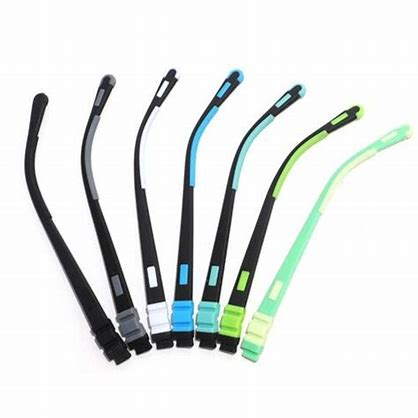

A
Glass Temple
, also known as a temple arm, is the part of a pair of glasses that extends over the ears and holds the glasses in place. The temples are typically made of a
sturdy and flexible material, such as metal or plastic, and they feature a range of design elements that ensure a comfortable and secure fit.